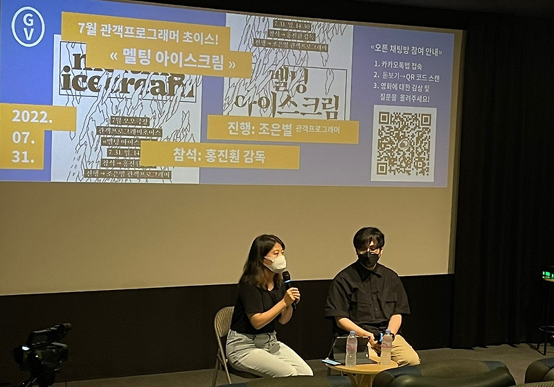

매거진 삼삼오오 · GV 모먼트
<멜팅 아이스크림> 홍진훤 감독 / 2022.07.31.


<멜팅 아이스크림> 관객과의 대화 기록 2022.07.31
참석 홍진훤 감독
진행 조은별 모더레이터
기록 정채연
조은별 : 오늘 이 자리에 함께해 주신 감독님 모시도록 하겠습니다. 반갑습니다. 제가 먼저 앞에 영화에 대한 이야기들을 감독님과 간단하게 나누는 동안에, 관객 여러분이 질문이나 감상을 많이 생각해 두셨다가 나눠보면 좋을 것 같아요.
제가 처음에 이 영화 소개만 보고서 이 영화를 틀어야겠다고 생각했던 게, 외부적으로 워낙 많은 문제들이 있었기 때문에 많은 사회 문제들을 돌아보면서 우리 안의 근본적인 문제를 고민할 기회가 많이 없었잖아요. 그런 것들을 짚어줄 수 있는 영화 같다는 생각이 들어서 선정을 하게 되었습니다. 실제로 영화를 보면서도 참 많은 생각이 들었어요. 이 영화가 처음에는 수해 필름이 발견되면서 시작됐다고 나와 있는데 어떻게 이런 영화를 만드셨을까 좀 궁금하더라고요. 그래서 처음에 이 영화를 어떻게 만들게 되셨는지 이야기 부탁드립니다.
홍진훤 : 제가 영화를 처음 만들어본 거라서 영화적인 말이나 이런 걸 잘 못해요. 그래서 편하게 말씀드릴 테니까 편하게 들어주세요. 저는 기본적으로 사진을 찍는 사람이고 그래서 주변에 사진 찍으시는 분들도 되게 많아요. 처음에 어떤 분이 민주화운동기념사업회 창고에서 수해 필름이라고 적혀 있는 필름 뭉치를 하나 발견했는데 무슨 필름인지를 모르겠다, 이거를 복원을 한번 해봐야 하지 않냐 이런 문의를 하셨어요. 그때 그 필름의 생산자로 의심되는 사람이 영화에 나오는 박승화 선생님이신데, 그분과 얘기를 나눠봤더니 당시에 가장 많이 쓰이고 가장 중요한 A컷 사진이 찍힌 필름들을 따로 보관했었는데 하필이면 그 필름이 수해를 입었다, 그 필름을 보관하시던 분이 버렸다고 한 것 같은데 그게 이번에 나왔나 보다 그거 아니면 뭐가 없다고 말씀을 해주셨어요. 처음에는 그렇게 중요한 필름이 발견됐다니 기쁘고 반가웠어요. 그래서 제가 잘은 못하지만 이건 너무 중요한 필름이니까 복원 과정을 영상으로 찍어서 기록을 해보자고 시작을 했었어요.
그러다 필름 복원 전문가에게 찾아가서 자문을 받는데 건들지 말라고 말리시는 거죠. 그냥 이대로 유지하는 것이 가장 최선의 방법이지 건들면 유제가 다 떨어져 나간다고요. 그런데 촬영을 하셨던 분은 그래도 해야지 그걸 어떻게 포기하냐 어떻게든 복원을 해내야지, 이런 이야기들을 들으면서 생각이 조금 복잡해졌어요. ‘왜 저렇게까지 복원하려고 하는 것이며 저 사람들이 복원하려고 하는 것은 무엇일까’ 하는.
개인적으로 저는 20살 무렵 김대중, 노무현 정권이 시작되면서 시위 현장을 많이 방문하고 거기서 오랫동안 죽음들을 목격했어요. 그리고 지금 이 사회가 되게 힘든 사회인 건 맞잖아요. 이런 지옥을 만드는 데 가장 핵심이 비정규직 문제라고 생각을 하고 있는 터였고. 그런데 그게 하필이면 김대중, 노무현이라는 민주화의 상징들이 대통령이 된 시대에서 강행됐고, 너무나 심한 노동 탄압들이 있었고, 이런 생각들로 복잡해지더라고요.
그때 투쟁 영상들을 매일 올려주는 ‘참세상’이라는 사이트가 있었는데 어느 날 서비스가 중단이 됐었어요. 물론 그건 돈 문제였고요. 어떤 기록을 이렇게 국가기관까지 나서서 복원을 하려고 하는데 이 복원하려고 하는 세계가 만들어 놓은 지옥이 존재하고, 그것을 막으려고 했던 사람들이 있는데 그 사람들의 기록은 또 삭제되었고. 그런 과정이 저한테는 좀 복잡하고 화도 나더라고요. 그래서 그냥 기록으로만 남기기보다는 이 사람들이랑 좀 싸워봐야겠다는 생각으로 영화를 시작한 것 같습니다.
조은별 : 듣기로는 사진의 수해를 복구하는 걸 기록해 보겠다에서 이 영화를 찍기까지의 기간이 그렇게 길지 않았을 것 같은데, 그 사유들은 엄청난 무게와 크기가 있는 것 같아요. 그러면 그렇게 영화로 전환을 해야겠다고 결심하시고 그다음부터 인터뷰를 시작하셨던 건가요?
홍진훤 : 처음에는 심각하게 당신들하고 내가 싸울 거라는 얘기는 별로 안 했어요. 민주화 운동을 기록했던 가장 큰 세 그룹이 여기 나온 민사연, 사사연, 사진 통신이에요. 그 기록자들의 시선으로 시대를 다시 한 번 복기해 보고 그 사람들은 어떤 세계를 시각화하고 싶었는지를 알아야 다른 시각물들과 같이 한번 싸워볼 수 있겠다는 생각이 들어서 세 그룹에서 활동하신 분들과 인터뷰를 진행했습니다.
그분들은 인터뷰를 하고 되게 아름다운 기록 영화가 나오겠지 하고 집에 가셨겠죠. 하지만 그 후에 제가 따로 찍은 장면들과 함께 편집을 하고 나서 그분들을 불러다가 당신들이 놀랄 수 있다, 당신들이 생각했던 그런 영화가 아닐 수 있고, 당신들을 희화화했을 수도 있고 당신들을 비판했을 수도 있고 이런 얘기를 했어요. 술 먹으면서 고소를 하시면 된다고 얘기했죠(웃음). 전날에 따로 모셔다가 스크리닝을 했는데 또 다행히 좋아들 해 주셔서.

조은별 : 실제로 반응은 좀 어떠셨나요.
홍진훤 : 처음에 고소한다고. (일동 웃음) 네, 상영 금지 이런 게 있거든요. 그래도 그분들, 적어도 이 세 분 정도는 그 시대에 대한 뜨거운 애정과 더불어 그 이후의 역사에 대한 반성도 기본적으로 있으신 분들이었고. 그리고 네가 하고 싶은 메시지에 일부분 동의하는 바가 있기 때문에 내가 이런 식으로 등장하는 것이 괜찮다 좋은 영화인 것 같다, 이런 식으로 얘기를 해 주셔서 별 탈 없습니다.
조은별 : 인터뷰를 하시면서 어떤 질문을 하셨는지요? 인터뷰를 듣다 보면 작가님들께서 ‘우리가 너무 선거 중심이지 않았나, 너무 무슨무슨 주의자야 식의 이론 중심이지 않았나’ 하는 현실과 동떨어져 있는 부분들도 스스로 지적을 하시거든요. 그런 것도 의도하신 게 아니라 자연스럽게 그분들이 다 얘기를 하셨던 건가요?
홍진훤 : 그렇죠. 제가 한 질문은 대부분 사진에 대한 것이었어요. 그 당시에 어떤 사진을 찍었었고 왜 그런 사진을 찍기 시작했으며 사진 그룹 간의 어떤 관계는 어땠으며 이런 것들. 그런데 그분들은 답변이 늘 이념적이거나 정치적으로 흘러가더라고요. 그러니까 그분들에게 사진은 어떤 기록물보다는 운동의 도구였던 셈이죠. 또 저분들 사이에도 정파에 따라 생각이 다르잖아요. NL, PD 이런 얘기도 나오지만. 그 차이만큼 사진도 다르고 추구하는 바도 다르고 이런 것들이 뒤섞이면서 그때의 세계가 그려지기는 했어요. 근데 전 그것을 전달하고 싶었던 게 아니라, 그 사람들의 이야기가 일종의 무용담이 되지 않아야 된다는 생각을 많이 했거든요. 그래서 이 사람들의 이야기를 온전히 다 전달하지는 않되, 그렇다고 또 제가 그들의 역사를 부정할 수는 없는 거니까 여러 고민 끝에 그 속도를 찾아내고자 편집을 상당히 거칠게 했었죠.
조은별 : 되게 평이하게 앉아서 인터뷰를 진행하시잖아요. 저는 그렇게 차분하게 인터뷰하는 중간중간에 들어오는 투쟁 모습이라든지 당시의 비명이라든지 그런 것들이 굉장히 이질감이 느껴지면서 확 와 닿더라고요. 그래서 우리가 좀 정제된 하나의 일반적인 민주화라는 역사를 트로피처럼 그냥 두고 살지 않았나, 현실은 그렇지 않았는데, 그런 고민을 좀 던지는 것 같았어요.
Q : 아까 김대중, 노무현 그 시대에 노동 착취가 많아서 데모가 많았다고 말씀하셨잖아요. 그럼 그 전 시대에는 인권이 존중이 되어서 그런 일이 없었을까, 그 얘기에 대해서 한번 물어보고 싶어요.
홍진훤 : 우리가 다 알고 있다시피 엄청난 군사 독재 시대가 있었고, 80년대 민주화 운동이랑 노동자 대투쟁을 기점으로 저항이 있었죠. 그것이 아름다운 역사임을 부정하지는 않아요. 부정하진 않는데 제가 이 영화를 통해서 하고 싶었던 건, 그러니까 ‘멜팅 아이스크림’이라는 제목 자체가 힌트가 될 수 있을 것 같아요.
제가 러시아에 잠시 있었거든요. 러시아를 선택했던 이유가 막연하게 어떤 혁명의 나라, 소비에트의 나라, 멋있잖아요. 그런 망상 같은 걸 갖고 있었죠. 그런데 러시아 사람들, 특히 젊은 분들을 만나서 얘기를 해보면 소비에트 시대와 그 주역들에 엄청난 혐오를 토로하더라고요. 부모님들이 겪었던 일, 자신들이 겪었던 일, 그런 얘기를 하면서 우리한테 아름다웠던 운동, 투쟁, 변화, 변혁 이런 것들은 왜 이렇게 쉽게 녹아내리는 것일까. 그것은 달콤하기 때문에 녹아내리는 거냐, 아니면 우리는 녹아내리는 걸 달콤하다고 느끼는 거냐 이런 얘기들을 하면서 ‘멜팅 아이스크림’이라는 제목을 떠올렸어요. 민주화 운동이 그 자체로 어떻다기보다는 왜 민주화라는 것을 우리는 과거화하고 있는가, 왜 민주화가 종료되었다고 선언하고 있는가, 그리고 민주화의 주역들을 신화화함으로써 우리가 지금 어떤 세계를 잃고 있는가 이런 생각을 많이 했었어요.
영화에서 계속 이상한 동상을 훑잖아요. 그게 김대중, 노무현 두 분의 동상인데 정말 엄청나게 거대한 금빛 동상이 서 있는 걸 보면서 촬영 감독한테 최대한 녹아내리고 추락하듯이 이 표면을 훑어 달라, 그 대신 이분들이 누구인지 명확하게 인지는 되지 않게 해달라고 부탁을 했었거든요. 왜냐하면 저는 지금 이분들에 대한 역사적 평가를 하자는 게 아니라, 왜 우리가 역사를 대하는 방식은 늘 이렇게 신화화하는 방식, 이렇게 모든 것을 종료시키는 과거화의 방식일 수밖에 없는가. 그것 때문에 우리의 운동이 결국은 미끄러지고 또 투쟁할 수밖에 없는 사람들이 등장하고 이런 역사가 반복되는 것이 아닌가 하는 질문이었어요.

Q : 저는 재미있는 영상 편집이라고 생각을 하면서 봤는데요. 이런 주제의 다큐멘터리 영화를 만들었으면 나왔을 법한 것과 차이가 있다고 생각한 장면은, 중간중간 밤에 고양이가 나무까지 걸어간다든지 하는 다른 결의 장면들이 계속 등장을 하잖아요. 그렇게 연출하신 감독님의 의도가 조금 듣고 싶습니다.
홍진훤 : 네, 이게 시간 축이 조금 많아요. 그러니까 어쨌든 80년대와 90년대 초반의 이야기도 하나가 흘러가고, 그다음에 2000년대 초반의 이야기가 또 하나 흘러가고, 이게 두 개의 큰 축이에요. 하지만 저는 이 영화를 통해서 옛날 얘기를 하고 싶었던 건 아니었기 때문에, 지금의 이야기까지 끌고 와야 된다고 생각을 했어요.
그래서 몇 가지 장치를 쓸 수밖에 없었는데 하나는 이제 첫 시작이 수해 입은 필름이었잖아요. 그때 당시에는 다 흑백 필름인데, 우리가 흑백 필름을 볼 때 느껴지는 노스탤지아가 있잖아요. 이게 그렇게 추억으로 빠져버리면 안 되는데, 지금 우리가 살고 있는 4K 칼라 시대의 낙차를 어떻게 표현할까 하다가 저화질의 흑백 영화로 가야겠다라고 생각을 해서 흑백이라는 걸 택하게 됐고요. 그리고 80-90년대의 이야기와 2000년대의 이야기가 동떨어져 있게 되기가 쉬울 것 같아서 지금의 장면들로 이것들을 이어붙여야겠다는 생각이었어요.
그래서 사실 크게 드러나지는 않지만 다 민주화 운동이 벌어졌던 장소들을 찍은 것이었거든요. 추념비가 구석에 처박혀 있다거나 아니면 게시판에 조국이 등장한다거나 그런데 그 옆에는 과외 홍보물이 있다든가 이런 상황들을 통해서 90년대가 여전히 이어져 오고 있는 것, 그다음에 2000년대와 90년대의 결과물로 등장한 것들이 섞여서 시간대가 혼돈됐으면 좋겠다는 생각이 있었고요.
또 하나는 저에게는 이 영화로 민주화 운동을 영웅화시키지 않을 책임이 있었거든요. 인터뷰 장면을 보면 보통 멋있는 영상이 뒤에 등장을 하잖아요. 근데 그거에 되게 반대가 되는 약하고 여리여리한 것들을 계속해서 붙여놓으려고 노력을 했었죠. 그러면서 그런 장면들이 막 들어간 것 같아요.
Q : 영화 잘 봤습니다. 처음에 조금 이해를 잘 못해서 중간중간 나오는 투쟁 영상들을 보고 저게 다 복구가 되는 거구나 했는데, 그럼 혹시 그때 그 수해 필름의 영상들은 다 복구가 돼 있는 건가요?
홍진훤 : 제가 영화를 잘못 만들어서. 하하. 엔딩에 나오는데 그 사진들을 복원해봤더니 친구들의 엠티 사진이었던 거예요. 사실 그 필름들은 애초에 존재하지 않았던 거죠. 그래서 저는 이 영화를 설명할 때 패배에 패배, 실패에 실패가 반복되는 영화라고 늘 이야기합니다. 그래서 이 영화를 만들 때부터 철저한 실패의 과정을 중심에 두고 시작이 됐던 거고요.
제가 이야기하고 싶었던 부분은 아까 말씀드린 역사의 신화화를 통해서 반복적으로 패배하는 우리의 싸움들이 느껴졌으면 좋겠다는 거예요. 비정규직 투쟁도 전부 다 패배한 싸움이거든요. 그래서 전 정말 단 하나의 희망도 보이지 않을 것 같은 영화의 구조를 만들고 싶었어요. 그런 의미에서 마지막 부분에 지금도 여전히 변하지 않는 현실들에 대한 멘트들, 가령 코로나 이야기를 하게 되었습니다.
저는 역사와 신화화라는 걸 어떻게 규정하냐면, 애써 승리로 규정 짓는 거라고 생각해요. 그러니까 운동은 운동으로 받아들이고, 그 운동은 종료될 수 없는 것이고, 늘 그것을 극복해 가는 것이 운동이고 투쟁이고 크게 말하면 혁명일 텐데요. 근데 어느 순간 누군가 그 운동의 승리를 선언하려고 하면 그때부터 그 운동은 종료되는 거죠.
저는 절대적인 패배는 절대적으로 받아들여야 한다고 생각해요. 제가 신뢰하는 것은 이 패배들의 힘이거든요. 누적된 패배들이 이 세상을 조금씩 밀고 나가는 거지, 어떤 승리로 선언된 투쟁들이 이 세상을 바꾸는 게 아니라고 생각하거든요. 저는 실패와 패배는 다른 거라고 생각하는데, 어쨌든 투쟁에 패배하고 필름의 복원에 실패하고 이런 좀 답답한 구조를 만들고 싶었어요.
조은별 : 처음부터 노이즈 장면들이 계속 있다 보니까 뒤에 좀 멀쩡해 보이는 장면들을 보고 이게 복원이 된 건가 그렇게 볼 수도 있을 것 같습니다.

조은별 : 채팅방에 또 질문이 올라왔네요. “안녕하세요. 목이 좀 안 좋아 문자로 질문합니다. 다음 작품 계획이 있으신가요?” 이거 마지막 질문으로 남겨놨던 건데, 실제로 사진작가로 활동을 하고 계신다고 하는데 포함해서 다음 계획들 좀 얘기해 주시죠.
홍진훤 : 다음 작업 계획은 사실 없어요. 처음에 영화화를 생각하지도 않고 시작을 했었기 때문에 영화라는 걸 계속할 수 있을까 저는 상당히 두려워하고 있는 중이에요. 왜냐하면 사진이라는 매체와 영상이라는 매체가 이렇게까지 다룰 줄은 몰랐거든요. 사실 사진이나 전시 같은 평면 매체는 관람의 주도권이-특히 시간을 다루는 부분에 있어서-보통 관객에게 있거든요. 이것을 얼마만큼 보고 어떤 순서로 볼지를 관객이 결정하는데, 편집이라는 과정을 거쳐 보니까 영상이라는 매체는 만드는 사람이 그걸 결정해야 하더라고요. 저는 그것이 갖고 있는 무게가 너무 무섭고 내가 이 많은 사람들한테 이걸 강요할 수 있고 또 거기에 대한 책임을 질 수 있나에 부정적이기 때문에 영화가 너무 무서워져서 다음 영화를 내가 찍을 수 있을까 이런 생각을 지금 하고 있어요.
지금까지는 영화의 사회적인 측면에서 이야기를 많이 나눴는데, 저한테는 더 중요한 부분이 시각에 대한 문제예요. 아까도 말씀드렸지만 어떤 시각물을 복원하려고 이 난리가 난 거잖아요, 처음에. 어떤 시각물이 사라진 문제가 저한테는 되게 큰 문제거든요. 흔히들 이제 더 이상 현실과 가상을 구분할 수 없고 이미지가 세상인지 세상이 이미지인지 모르겠다는 말을 많이 하잖아요. 그리고 이론적으로 미술을 하는 사람들은 그걸 받아들이는 사람들이고. 그러면 가상과 현실이 중첩돼 있다고 표현하는 이 세상에서 가시화의 문제는 생존과 직결된 문제라고 생각을 해요. 그래서 어떤 이미지들, 그러니까 이미지의 피사체 혹은 이미지가 가시화되고 비가시화되는지를 선택하는 권력이 저는 지금 이 세계에서 가장 위험하고도 강력한 권력이라고 생각을 하거든요. 그래서 각종 sns, 유튜브 이런 것들을 비판하는 내용의 작업도 많이 해요. 이 영화에도 그런 부분이 있거든요. 그래서 어떤 시각 세계를 가시화할 것이냐 비가시화할 것이냐의 권력을 누군가는 다시 고민해볼 시기가 되었고 그런 이야기들을 같이 하면 좋겠다는 생각은 하고 있어요.
그래서 민주화 운동에서 비정규직 투쟁으로 영화 내용을 어떻게 자연스럽게 전환할까라고 고민하다가 편집에 신경을 많이 썼어요. 영화에서 보셨듯이 비정규직 영상은 처음에 저화질에서 시작해서 점점 고화질로 가거든요. 그런데 민주화 운동의 사진 같은 경우는 처음에는 엄청 큰 고화질 빔 프로젝터 벽에서 시작해서 결국 다 녹아내려버린 필름 쪽으로 가게 되거든요. 이미지를 다루는 사람이다 보니 시각적인 권력의 문제, 화질의 문제 이런 것들도 훨씬 더 중요할 수도 있을 것 같아요.
조은별 : 혹시 더 이야기 있으신가요? 없으시면 또 생각하시는 중에 제가 궁금했던 걸 하나 여쭤볼게요. 제가 저 시대를 다 알고 있지는 않아서 투쟁 장면들을 찾아봤어요. 전 처음 봤을 때는 시기가 대부분 2007년 비정규 악법 이후라고 생각했는데, 세세히 찾아보면 세아테크, 이주 노동자, ktx 승무원 투쟁도 있어요. 연도도 시기도 예를 들어 2007년 이전도 있고 그다음에 2010년대 이후도 있는데, 이 특정 투쟁들을 배치를 하셨던 의도가 좀 있었을까요.
홍진훤 : 김대중 정권, 노무현 정권 때를 기준으로 골라낸 거였어요. 근데 그런 고민을 했어요. 처음에는 저도 사진을 찍으려고 현장에 대부분 있어서 어떤 상황인지 아니까 당연히 박승화, 이정용, 김진숙 그런 이름들 무슨 사업장, 당연히 써야 된다고 생각했고 그래서 처음엔 쭉 썼었어요. 근데 쓰다 보니까 자꾸 어떤 투쟁을 소개하는 쪽으로 자꾸 흘러가더라구요. 그리고 김진숙이나 이런 분들은 너무 유명하신 분들이잖아요. 그래서 굳이 나까지 호명하면서 일종의 영웅화의 방식으로 갈 필요가 있을까? 저는 비정규직이라는 것을 중심으로 어떤 세계를 막으려고 했던 힘과 이것을 복원하고 싶어 하는 힘이 부딪히기를 원했던 거지, 투쟁들을 하나하나 소개하고 싶던 게 아니기 때문에 일부러 이름들과 소속을 다 지웠어요.
그 다음에 일부러 여성 노동자들의 투쟁을 영화 후반부에 다 몰았어요. 마지막에 ‘딸들아 일어나라’는 노래가 나와요. 이거는 어디 가서 별로 얘기는 안 하지만 저는 동시대 페미니즘의 형국 속에서도 배제된 부분이 있다고 생각하는데, 이게 저는 여성 노동자들에 대한 문제라고 생각해요. 사실 70년대 여성 노동자들을 인터뷰해 보면 다 여성으로서의 의식을 갖고 싸우셨거든요. 지금은 페미니즘 안에서도 여성 노동자가 삭제된 세계인 거예요, 저한테는. 그래서 일부러 그런 것들을 좀 모아 놨고요.
그다음에 이 영화를 보실 분들이 누굴까 생각을 해봤어요. 처음에는 보여주고 싶은 분들이 한 세 부류 정도 있었어요. 하나는 민주화의 역사 안에 계셔서 이 영화를 보고 화를 낼 분들이고, 그다음에 하나는 -저한테는 중요한 건데- 사이트 ‘참세상’의 영상들이 카피 레프트로 배포가 됐기 때문에 영화에 쓸 수 있었거든요. 말씀드렸듯이 저에게는 시각을 둘러싼 소유나 사용의 권력이 매우 중요한데요. 당시에 저렇게 빡세게 영상을 찍어 놓고 카피 레프트로 자기의 권리를 주장하지 않으면서 저 영상을 공유했던 분들의 성함을 크레딧 처음에 올렸어요. 그래서 그분들이 한번 봐주셨으면, 당신들이 그렇게 해주어서 시간이 지나고 이런 게 나올 수 있었다는 것도 좀 보여드리고 싶었습니다. 마지막으로 동시대 젊은이들이 봤으면 했어요. 지금 저는 혐오 문화가 도대체 어디까지 갈 건지 걱정이 큰데. 지금이 지옥인 건 맞고 그분들이 살아가는 지옥을 선배들이 만든 것도 맞고 그래서 그들의 지금 상황과 마음을 충분히 이해하지만, 이 세계를 막고자 했던 사람들도 있었어, 그 사람들이 패배했을지 몰라도 그 사람들이 이 세계를 미리 알고 있었고 그래서 후대에 이걸 남기지 않겠다고 목숨 걸고 싸웠던 사람이 있었어, 그거를 좀 이야기하고 싶었어요.
조은별 : 혹시 마지막으로 더 나누실 이야기가 없으시면, 일요일 낮에 비도 오는데 여기까지 와주셔서 너무 감사드리고요, 오늘 관객 프로그래머 초이스 멜팅 아이스크림 상영과 감독과의 대화는 마치도록 하겠습니다. 오늘 이 영화를 보신 분들은 아마 숙제가 다 있으실 것 같은데요. 이 문을 나서면 카운트다운이 시작되니까 나는 앞으로 어떤 행동을 하면 좋을지 고민을 시작하는 시간이 되었으면 좋겠습니다. 돌아가시는 길 조심히 돌아가시기 바라겠습니다.